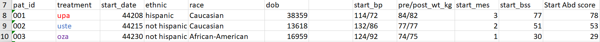
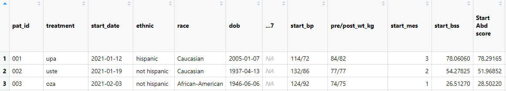
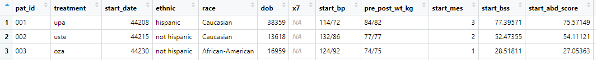
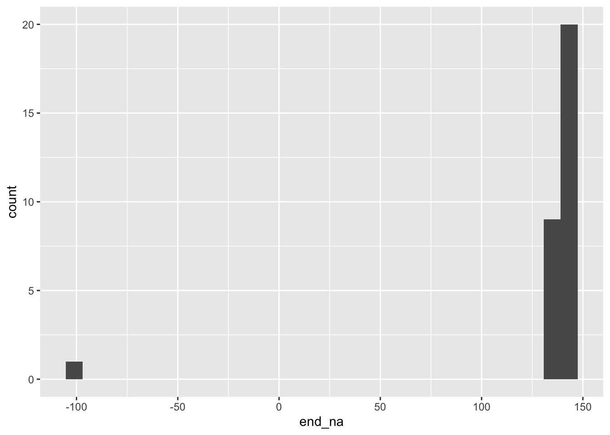
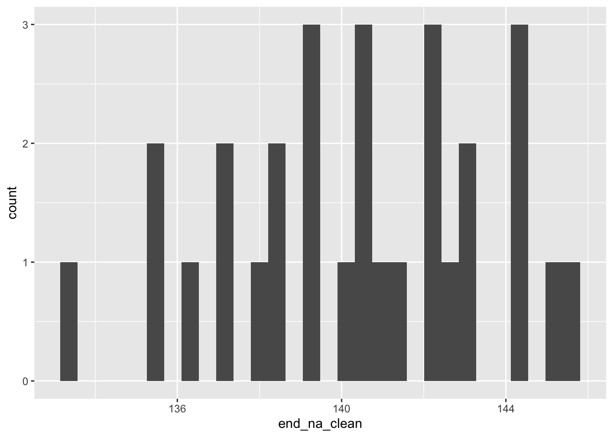
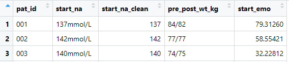

New names:
• `` -> `...7`Stage 1 cleaning
Variable names
Original variable names in excel:

. . .
Variable names import as shown, with modifications from readxl::read_excel() to ensure uniqueness:

Variable names, cleaner
Variable names as imported:
. . .
janitor::clean_names() removes special characters and implements snake case by default:
df_clean <- df_raw |>
janitor::clean_names() 
Remove empty columns or rows
df_clean |>
select(pat_id, race:start_bp) |>
slice(13:18)# A tibble: 6 × 5
pat_id race dob x7 start_bp
<chr> <chr> <dttm> <lgl> <chr>
1 013 Caucasian 1948-02-27 00:00:00 NA 118/73
2 014 African-American 1966-04-22 00:00:00 NA 106/59
3 015 H/API 1978-08-11 00:00:00 NA 112/69
4 <NA> <NA> NA NA <NA>
5 016 African-American 1998-10-28 00:00:00 NA 114/76
6 017 Caucasian 2001-01-09 00:00:00 NA 124/80 df_clean |>
select(pat_id, race:start_bp) |>
slice(13:18)# A tibble: 6 × 4
pat_id race dob start_bp
<chr> <chr> <dttm> <chr>
1 013 Caucasian 1948-02-27 00:00:00 118/73
2 014 African-American 1966-04-22 00:00:00 106/59
3 015 H/API 1978-08-11 00:00:00 112/69
4 016 African-American 1998-10-28 00:00:00 114/76
5 017 Caucasian 2001-01-09 00:00:00 124/80
6 018 Caucasian 1994-03-07 00:00:00 120/68 #
df_raw |>
janitor::clean_names() |>
glimpse()Rows: 31
Columns: 38
$ pat_id <chr> "001", "002", "00…
$ treatment <chr> "upa", "uste", "o…
$ start_date <dbl> 44208, 44215, 442…
$ ethnic <chr> "hispanic", "not …
$ race <chr> "Caucasian", "Cau…
$ dob <dttm> 2005-01-07, 1937…
$ x7 <lgl> NA, NA, NA, NA, N…
$ start_bp <chr> "114/72", "132/86…
$ pre_post_wt_kg <chr> "84/82", "77/77",…
$ start_mes <dbl> 3, 2, 1, 3, 3, 2,…
$ start_bss <dbl> 75.45589, 53.6223…
$ start_abd_score <dbl> 80.59025, 53.6447…
$ start_sys <dbl> 81.45415, 52.6091…
$ start_coping <dbl> 50.41090, 29.5683…
$ start_emo <dbl> 73.32378, 55.7246…
$ daily_life_impact_score_at_start <dbl> 86.88945, 56.1037…
$ start_wbc <dbl> 8.2, 10.1, 5.5, 4…
$ start_plt <chr> "273K/microL", "4…
$ start_na <chr> "137mmol/L", "142…
$ start_k <chr> "3.7", "4.0999999…
$ end_month <dbl> 6, 6, 7, 7, 7, 8,…
$ end_day <dbl> 14, 21, 6, 22, 30…
$ end_year <dbl> 2021, 2021, 2021,…
$ end_mes <dbl> 0, 1, 1, 1, 2, 1,…
$ end_bss <dbl> 9.455894, 31.6223…
$ end_abd <dbl> 20.590252, 33.644…
$ end_sys <dbl> 9.454153, 28.6091…
$ end_coping <dbl> 23.41090, 20.5683…
$ end_emo <chr> "31.9805312327023…
$ end_dl <chr> "6.66055858577175…
$ end_wbc <dbl> 8.562208, 11.1354…
$ end_plt <dbl> 201, 340, 256, 32…
$ end_na <dbl> 137.3278, 142.214…
$ end_k <dbl> 3.741212, 4.14846…
$ fake_street <chr> "990 Mohammad Mou…
$ fake_city <chr> "North Sigmundvil…
$ fake_state <chr> "New Mexico", "Mi…
$ fake_zip <dbl> 96074, 11264, 572…df_raw |>
janitor::clean_names() |>
janitor::remove_empty(which = c("rows", "cols")) |>
glimpse()Rows: 30
Columns: 37
$ pat_id <chr> "001", "002", "00…
$ treatment <chr> "upa", "uste", "o…
$ start_date <dbl> 44208, 44215, 442…
$ ethnic <chr> "hispanic", "not …
$ race <chr> "Caucasian", "Cau…
$ dob <dttm> 2005-01-07, 1937…
$ start_bp <chr> "114/72", "132/86…
$ pre_post_wt_kg <chr> "84/82", "77/77",…
$ start_mes <dbl> 3, 2, 1, 3, 3, 2,…
$ start_bss <dbl> 75.45589, 53.6223…
$ start_abd_score <dbl> 80.59025, 53.6447…
$ start_sys <dbl> 81.45415, 52.6091…
$ start_coping <dbl> 50.41090, 29.5683…
$ start_emo <dbl> 73.32378, 55.7246…
$ daily_life_impact_score_at_start <dbl> 86.88945, 56.1037…
$ start_wbc <dbl> 8.2, 10.1, 5.5, 4…
$ start_plt <chr> "273K/microL", "4…
$ start_na <chr> "137mmol/L", "142…
$ start_k <chr> "3.7", "4.0999999…
$ end_month <dbl> 6, 6, 7, 7, 7, 8,…
$ end_day <dbl> 14, 21, 6, 22, 30…
$ end_year <dbl> 2021, 2021, 2021,…
$ end_mes <dbl> 0, 1, 1, 1, 2, 1,…
$ end_bss <dbl> 9.455894, 31.6223…
$ end_abd <dbl> 20.590252, 33.644…
$ end_sys <dbl> 9.454153, 28.6091…
$ end_coping <dbl> 23.41090, 20.5683…
$ end_emo <chr> "31.9805312327023…
$ end_dl <chr> "6.66055858577175…
$ end_wbc <dbl> 8.562208, 11.1354…
$ end_plt <dbl> 201, 340, 256, 32…
$ end_na <dbl> 137.3278, 142.214…
$ end_k <dbl> 3.741212, 4.14846…
$ fake_street <chr> "990 Mohammad Mou…
$ fake_city <chr> "North Sigmundvil…
$ fake_state <chr> "New Mexico", "Mi…
$ fake_zip <dbl> 96074, 11264, 572…Recoding
df_clean |>
count(ethnic)# A tibble: 5 × 2
ethnic n
<chr> <int>
1 Hispanic 1
2 NOT hispanic 1
3 hispamnic 1
4 hispanic 3
5 not hispanic 24df_clean <- df_raw |>
janitor::clean_names() |>
janitor::remove_empty(which = c("rows", "cols")) |>
mutate(
ethnic_clean = case_when(
ethnic %in% c("hispanic", "Hispanic", "hispamnic") ~ "hispanic",
ethnic %in% c("NOT hispanic", "not hispanic") ~ "not hispanic",
)
)
df_clean |>
count(ethnic_clean)# A tibble: 2 × 2
ethnic_clean n
<chr> <int>
1 hispanic 5
2 not hispanic 25df_clean |>
count(ethnic_clean, ethnic)# A tibble: 5 × 3
ethnic_clean ethnic n
<chr> <chr> <int>
1 hispanic Hispanic 1
2 hispanic hispamnic 1
3 hispanic hispanic 3
4 not hispanic NOT hispanic 1
5 not hispanic not hispanic 24Exercise
Complete Data Cleaning Fundamentals Exercise SP1.
–> Take me to the exercises <–
05:00
Replace values with missing
df_clean |>
count(end_na) # A tibble: 30 × 2
end_na n
<dbl> <int>
1 -99 1
2 133. 1
3 135. 1
4 135. 1
5 136. 1
6 137. 1
7 137. 1
8 138. 1
9 138. 1
10 138. 1
# ℹ 20 more rowsdf_clean |>
ggplot(aes(x = end_na)) +
geom_histogram()`stat_bin()` using `bins = 30`. Pick better value with
`binwidth`.
df_clean <- df_raw |>
janitor::clean_names() |>
janitor::remove_empty(which = c("rows", "cols")) |>
mutate(
ethnic_clean = case_when(
ethnic %in% c("hispanic", "Hispanic", "hispamnic") ~ "hispanic",
ethnic %in% c("NOT hispanic", "not hispanic") ~ "not hispanic",
),
end_na_clean = na_if(end_na, -99)
) df_clean |>
count(end_na, end_na_clean) # A tibble: 30 × 3
end_na end_na_clean n
<dbl> <dbl> <int>
1 -99 NA 1
2 133. 133. 1
3 135. 135. 1
4 135. 135. 1
5 136. 136. 1
6 137. 137. 1
7 137. 137. 1
8 138. 138. 1
9 138. 138. 1
10 138. 138. 1
# ℹ 20 more rowsdf_clean |>
ggplot(aes(x = end_na_clean)) +
geom_histogram()`stat_bin()` using `bins = 30`. Pick better value with
`binwidth`.Warning: Removed 1 rows containing non-finite values
(`stat_bin()`).
Incorrect variable type
df_raw |>
select(end_emo) |>
glimpse()Rows: 31
Columns: 1
$ end_emo <chr> "31.980531232702354", "43.154961592472482"…mean(df_raw[["end_emo"]], na.rm = TRUE)Warning in mean.default(df_raw[["end_emo"]], na.rm = TRUE):
argument is not numeric or logical: returning NA[1] NAdf_raw[["end_emo"]] [1] "31.980531232702354" "43.154961592472482"
[3] "36.881123946451076" "58.670309483569042"
[5] "58.863864661125419" "34.593046073414015"
[7] "63.285059520403976" "65.313599031979081"
[9] "27.976656095216335" "46.802992507671597"
[11] "33.122563864954309" "49.240520034972612"
[13] "47.050604139781761" "54.487640962873577"
[15] "not done" NA
[17] "49.084529664712441" "27.370965295845295"
[19] "60.432712720552317" "26.162987564588903"
[21] "48.329539382030802" "40.735196376550661"
[23] "27.000188739872502" "57.019771433515629"
[25] "39.783229029414606" "52.110256961065794"
[27] "37.098188331548307" "39.264033750725694"
[29] "70.34798440037369" "29.839211956263874"
[31] "42.853436653960713"df_clean <- df_raw |>
janitor::clean_names() |>
janitor::remove_empty(which = c("rows", "cols")) |>
mutate(
ethnic_clean = case_when(
ethnic %in% c("hispanic", "Hispanic", "hispamnic") ~ "hispanic",
ethnic %in% c("NOT hispanic", "not hispanic") ~ "not hispanic",
),
end_na_clean = na_if(end_na, -99),
end_emo_clean = na_if(end_emo, "not done") |> as.numeric()
) df_clean |>
select(end_emo_clean) |>
glimpse()Rows: 30
Columns: 1
$ end_emo_clean <dbl> 31.98053, 43.15496, 36.88112, 58.670…mean(df_clean[["end_emo_clean"]], na.rm = TRUE)[1] 44.78813df_clean |>
count(end_emo_clean, end_emo)# A tibble: 30 × 3
end_emo_clean end_emo n
<dbl> <chr> <int>
1 26.2 26.162987564588903 1
2 27.0 27.000188739872502 1
3 27.4 27.370965295845295 1
4 28.0 27.976656095216335 1
5 29.8 29.839211956263874 1
6 32.0 31.980531232702354 1
7 33.1 33.122563864954309 1
8 34.6 34.593046073414015 1
9 36.9 36.881123946451076 1
10 37.1 37.098188331548307 1
# ℹ 20 more rowsCorrecting dates
df_raw |>
select(start_date) |>
glimpse()Rows: 31
Columns: 1
$ start_date <dbl> 44208, 44215, 44230, 44245, 44255, 4425…df_raw[["start_date"]] [1] 44208 44215 44230 44245 44255 44259 44264 44999 44276
[10] 44278 44297 44308 44313 44318 44324 NA 44329 44332
[19] 44346 44358 44370 44383 44391 44397 44412 44425 44434
[28] 44444 44461 44475 44500df_clean <- df_raw |>
janitor::clean_names() |>
janitor::remove_empty(which = c("rows", "cols")) |>
mutate(
ethnic_clean = case_when(
ethnic %in% c("hispanic", "Hispanic", "hispamnic") ~ "hispanic",
ethnic %in% c("NOT hispanic", "not hispanic") ~ "not hispanic",
),
end_na_clean = na_if(end_na, -99),
end_emo_clean = na_if(end_emo, "not done") |> as.numeric(),
start_date_clean = janitor::convert_to_date(start_date)
) df_clean |>
select(start_date, start_date_clean) |>
glimpse()Rows: 30
Columns: 2
$ start_date <dbl> 44208, 44215, 44230, 44245, 44255…
$ start_date_clean <date> 2021-01-12, 2021-01-19, 2021-02-…df_clean |>
count(start_date, start_date_clean) # A tibble: 30 × 3
start_date start_date_clean n
<dbl> <date> <int>
1 44208 2021-01-12 1
2 44215 2021-01-19 1
3 44230 2021-02-03 1
4 44245 2021-02-18 1
5 44255 2021-02-28 1
6 44259 2021-03-04 1
7 44264 2021-03-09 1
8 44276 2021-03-21 1
9 44278 2021-03-23 1
10 44297 2021-04-11 1
# ℹ 20 more rowsExtracting numbers from text
df_raw |>
select(start_na) |>
glimpse()Rows: 31
Columns: 1
$ start_na <chr> "137mmol/L", "142mmol/L", "140mmol/L", "1…mean(df_raw[["start_na"]], na.rm = TRUE)Warning in mean.default(df_raw[["start_na"]], na.rm =
TRUE): argument is not numeric or logical: returning NA[1] NAdf_raw[["start_na"]] [1] "137mmol/L" "142mmol/L" "140mmol/L" "139mmol/L"
[5] "144mmol/L" "145mmol/L" "142mmol/L" "138mmol/L"
[9] "140mmol/L" "137mmol/L" "143mmol/L" "136mmol/L"
[13] "135mmol/L" "141mmol/L" "133mmol/L" NA
[17] "135mmol/L" "143mmol/L" "136mmol/L" "144mmol/L"
[21] "145mmol/L" "140mmol/L" "141mmol/L" "142mmol/L"
[25] "138mmol/L" "139mmol/L" "142mmol/L" "144mmol/L"
[29] "139mmol/L" "138mmol/L" "140mmol/L"df_clean <- df_raw |>
janitor::clean_names() |>
janitor::remove_empty(which = c("rows", "cols")) |>
mutate(
ethnic_clean = case_when(
ethnic %in% c("hispanic", "Hispanic", "hispamnic") ~ "hispanic",
ethnic %in% c("NOT hispanic", "not hispanic") ~ "not hispanic",
),
end_na_clean = na_if(end_na, -99),
end_emo_clean = na_if(end_emo, "not done") |> as.numeric(),
start_na_clean = parse_number(start_na)
) df_clean |>
select(start_na_clean) |>
glimpse()Rows: 30
Columns: 1
$ start_na_clean <dbl> 137, 142, 140, 139, 144, 145, 142, …mean(df_clean[["start_na_clean"]], na.rm = TRUE)[1] 139.9333df_clean |>
count(start_na_clean, start_na)# A tibble: 12 × 3
start_na_clean start_na n
<dbl> <chr> <int>
1 133 133mmol/L 1
2 135 135mmol/L 2
3 136 136mmol/L 2
4 137 137mmol/L 2
5 138 138mmol/L 3
6 139 139mmol/L 3
7 140 140mmol/L 4
8 141 141mmol/L 2
9 142 142mmol/L 4
10 143 143mmol/L 2
11 144 144mmol/L 3
12 145 145mmol/L 2Exercise
Complete Data Cleaning Fundamentals Exercise SP2.
–> Take me to the exercises <–
05:00
Character variable should be a factor
df_clean |>
count(treatment)# A tibble: 3 × 2
treatment n
<chr> <int>
1 oza 10
2 upa 10
3 uste 10df_clean |>
count(ethnic_clean)# A tibble: 2 × 2
ethnic_clean n
<chr> <int>
1 hispanic 5
2 not hispanic 25df_clean |>
select(treatment, ethnic_clean) |>
glimpse()Rows: 30
Columns: 2
$ treatment <chr> "upa", "uste", "oza", "upa", "oza", "…
$ ethnic_clean <chr> "hispanic", "not hispanic", "not hisp…df_clean |>
select(treatment, ethnic_clean) |>
tbl_summary(by = treatment)| Characteristic | oza, N = 101 | upa, N = 101 | uste, N = 101 |
|---|---|---|---|
| ethnic_clean | |||
| hispanic | 4 (40%) | 1 (10%) | 0 (0%) |
| not hispanic | 6 (60%) | 9 (90%) | 10 (100%) |
| 1 n (%) | |||
df_clean <- df_raw |>
janitor::clean_names() |>
janitor::remove_empty(which = c("rows", "cols")) |>
mutate(
ethnic_clean = case_when(
ethnic %in% c("hispanic", "Hispanic", "hispamnic") ~ "hispanic",
ethnic %in% c("NOT hispanic", "not hispanic") ~ "not hispanic",
) |> fct_infreq(),
end_na_clean = na_if(end_na, -99),
end_emo_clean = na_if(end_emo, "not done") |> as.numeric(),
start_na_clean = parse_number(start_na),
treatment = fct_relevel(treatment, "upa", "uste", "oza")
) See the forcats package for other factor handling solutions.
df_clean |>
count(treatment)# A tibble: 3 × 2
treatment n
<fct> <int>
1 upa 10
2 uste 10
3 oza 10df_clean |>
count(ethnic_clean)# A tibble: 2 × 2
ethnic_clean n
<fct> <int>
1 not hispanic 25
2 hispanic 5df_clean |>
select(treatment, ethnic_clean) |>
glimpse()Rows: 30
Columns: 2
$ treatment <fct> upa, uste, oza, upa, oza, uste, uste,…
$ ethnic_clean <fct> hispanic, not hispanic, not hispanic,…df_clean |>
select(treatment, ethnic_clean) |>
tbl_summary(by = treatment)| Characteristic | upa, N = 101 | uste, N = 101 | oza, N = 101 |
|---|---|---|---|
| ethnic_clean | |||
| not hispanic | 9 (90%) | 10 (100%) | 6 (60%) |
| hispanic | 1 (10%) | 0 (0%) | 4 (40%) |
| 1 n (%) | |||
Exercise
Complete Data Cleaning Fundamentals Exercise SP3.
–> Take me to the exercises <–
05:00
Separating values
df_clean |>
select(start_bp) |>
glimpse()Rows: 30
Columns: 1
$ start_bp <chr> "114/72", "132/86", "124/92", "144/83", "…mean(df_clean[["start_bp"]], na.rm = TRUE)Warning in mean.default(df_clean[["start_bp"]], na.rm =
TRUE): argument is not numeric or logical: returning NA[1] NAdf_clean[["start_bp"]] [1] "114/72" "132/86" "124/92" "144/83" "122/78" "121/80"
[7] "133/74" "116/73" "118/66" "122/78" "126/82" "114/68"
[13] "118/73" "106/59" "112/69" "114/76" "124/80" "120/68"
[19] "119/77" "116/74" "121/80" "112/58" "117/67" "118/73"
[25] "116/74" "126/84" "144/96" "120/84" "115/75" "142/92"df_clean <- df_raw |>
janitor::clean_names() |>
janitor::remove_empty(which = c("rows", "cols")) |>
mutate(
ethnic_clean = case_when(
ethnic %in% c("hispanic", "Hispanic", "hispamnic") ~ "hispanic",
ethnic %in% c("NOT hispanic", "not hispanic") ~ "not hispanic",
) |> fct_infreq(),
end_na_clean = na_if(end_na, -99),
end_emo_clean = na_if(end_emo, "not done") |> as.numeric(),
start_na_clean = parse_number(start_na),
treatment = fct_relevel(treatment, "upa", "uste", "oza")
) |>
separate_wider_delim(start_bp, delim ="/", names = c("bp_systolic", "bp_diastolic"), cols_remove = FALSE) |>
mutate(across(c(bp_systolic, bp_diastolic), as.numeric)) df_clean |>
select(start_bp, bp_systolic, bp_diastolic) |>
glimpse()Rows: 30
Columns: 3
$ start_bp <chr> "114/72", "132/86", "124/92", "144/83…
$ bp_systolic <dbl> 114, 132, 124, 144, 122, 121, 133, 11…
$ bp_diastolic <dbl> 72, 86, 92, 83, 78, 80, 74, 73, 66, 7…mean(df_clean[["bp_systolic"]], na.rm = TRUE)[1] 121.5333mean(df_clean[["bp_diastolic"]], na.rm = TRUE)[1] 76.36667df_clean[["bp_systolic"]] [1] 114 132 124 144 122 121 133 116 118 122 126 114 118 106
[15] 112 114 124 120 119 116 121 112 117 118 116 126 144 120
[29] 115 142df_clean[["bp_diastolic"]] [1] 72 86 92 83 78 80 74 73 66 78 82 68 73 59 69 76 80 68
[19] 77 74 80 58 67 73 74 84 96 84 75 92Assigning labels
What does anything mean?
view(df_clean)
# first import codebook
df_codebook <- read_excel(
path = here("data", "messy_uc.xlsx"),
sheet = "Codebook"
)New names:
• `` -> `...5`df_codebook# A tibble: 33 × 5
Variable Details Units Range ...5
<chr> <chr> <chr> <chr> <chr>
1 pat_id Patient Identifier digi… 001-… <NA>
2 treatment Treatment for UC <NA> upad… <NA>
3 start_date Date of start of treatm… digi… YYYY… <NA>
4 ethnic Ethnicity - hispanic or… <NA> hisp… <NA>
5 race Race - one of 7 choices <NA> cauc… <NA>
6 dob date of birth digi… YYYY… <NA>
7 start_bp blood pressure at start… mm Hg syst… <NA>
8 pre/post_wt_kg weight in kilograms at … kilo… 48-1… <NA>
9 start_mes Mayo endoscopic Score a… poin… 0-3 <NA>
10 start_bss Bowel symptom score at … poin… 0-100 QOL …
# ℹ 23 more rows# second create a named vector of variable names and variable labels
vec_variables <- df_codebook |>
select(Variable, Details) |>
deframe()
vec_variables pat_id
"Patient Identifier"
treatment
"Treatment for UC"
start_date
"Date of start of treatment"
ethnic
"Ethnicity - hispanic or not hispanic"
race
"Race - one of 7 choices"
dob
"date of birth"
start_bp
"blood pressure at start - systolic/diastolic"
pre/post_wt_kg
"weight in kilograms at start/end"
start_mes
"Mayo endoscopic Score at start of treatment"
start_bss
"Bowel symptom score at start"
start_abd
"Abdominal symptom score at start"
start_sys
"Systemic symptom score at start"
start_coping
"Coping score at start"
start_emo
"Emotional symptom score at start"
start_dl
"Impact on Daily living score at start"
start_wbc
"White blood cell count in blood at start"
start_plt
"Platelet count in blood at start"
start_na
"Sodium level in serum at start"
start_k
"Potassium level in serum at start"
end_month
"Month of end visit"
end_day
"Day of end visit"
end_year
"Year of end visit"
end_mes
"Mayo endoscopic Score at end of treatment"
end_bss
"Bowel symptom score at end"
end_abd
"Abdominal symptom score at end"
end_sys
"Systemic symptom score at end"
end_coping
"Coping score at end"
end_emo
"Emotional symptom score at end"
end_dl
"Impact on Daily living score at end"
end_wbc
"White blood cell count in blood at end"
end_plt
"Platelet count in blood at end"
end_na
"Sodium level in serum at end"
end_k
"Potassium level in serum at end" # assign labels to the data set
df_clean <- df_raw |>
janitor::clean_names() |>
janitor::remove_empty(which = c("rows", "cols")) |>
mutate(
ethnic_clean = case_when(
ethnic %in% c("hispanic", "Hispanic", "hispamnic") ~ "hispanic",
ethnic %in% c("NOT hispanic", "not hispanic") ~ "not hispanic",
) |> fct_infreq(),
end_na_clean = na_if(end_na, -99),
end_emo_clean = na_if(end_emo, "not done") |> as.numeric(),
start_na_clean = parse_number(start_na),
treatment = fct_relevel(treatment, "upa", "uste", "oza")
) |>
separate_wider_delim(start_bp, delim ="/", names = c("bp_systolic", "bp_diastolic"), cols_remove = FALSE) |>
mutate(across(c(bp_systolic, bp_diastolic), as.numeric)) |>
# assign labels to all variables from the codebook
labelled::set_variable_labels(!!!vec_variables, .strict = FALSE) |>
# assign labels to new derived variables that did not exist in the code book
labelled::set_variable_labels(
ethnic_clean = "Ethnicity",
end_na_clean = "Sodium level in serum at end",
end_emo_clean = "Emotional symptom score at end",
bp_systolic = "Systolic blood pressure",
bp_diastolic = "Diastolic blood pressure"
)# view entire data set
df_clean |> view()
# view structure of data frame
df_clean |> str()tibble [30 × 43] (S3: tbl_df/tbl/data.frame)
$ pat_id : chr [1:30] "001" "002" "003" "004" ...
..- attr(*, "label")= chr "Patient Identifier"
$ treatment : Factor w/ 3 levels "upa","uste","oza": 1 2 3 1 3 2 2 3 1 3 ...
..- attr(*, "label")= chr "Treatment for UC"
$ start_date : num [1:30] 44208 44215 44230 44245 44255 ...
..- attr(*, "label")= chr "Date of start of treatment"
$ ethnic : chr [1:30] "hispanic" "not hispanic" "not hispanic" "not hispanic" ...
..- attr(*, "label")= chr "Ethnicity - hispanic or not hispanic"
$ race : chr [1:30] "Caucasian" "Caucasian" "African-American" "Caucasian" ...
..- attr(*, "label")= chr "Race - one of 7 choices"
$ dob : POSIXct[1:30], format: "2005-01-07" ...
$ bp_systolic : num [1:30] 114 132 124 144 122 121 133 116 118 122 ...
..- attr(*, "label")= chr "Systolic blood pressure"
$ bp_diastolic : num [1:30] 72 86 92 83 78 80 74 73 66 78 ...
..- attr(*, "label")= chr "Diastolic blood pressure"
$ start_bp : chr [1:30] "114/72" "132/86" "124/92" "144/83" ...
..- attr(*, "label")= chr "blood pressure at start - systolic/diastolic"
$ pre_post_wt_kg : chr [1:30] "84/82" "77/77" "74/75" "66/65" ...
$ start_mes : num [1:30] 3 2 1 3 3 2 3 3 2 3 ...
..- attr(*, "label")= chr "Mayo endoscopic Score at start of treatment"
$ start_bss : num [1:30] 75.5 53.6 25.5 79.4 79.5 ...
..- attr(*, "label")= chr "Bowel symptom score at start"
$ start_abd_score : num [1:30] 80.6 53.6 26.2 77.9 78.4 ...
$ start_sys : num [1:30] 81.5 52.6 27.6 79.8 79.2 ...
..- attr(*, "label")= chr "Systemic symptom score at start"
$ start_coping : num [1:30] 50.4 29.6 15.2 51.3 43.1 ...
..- attr(*, "label")= chr "Coping score at start"
$ start_emo : num [1:30] 73.3 55.7 36.6 80.8 72.5 ...
..- attr(*, "label")= chr "Emotional symptom score at start"
$ daily_life_impact_score_at_start: num [1:30] 86.9 56.1 31.4 84.9 87.3 ...
$ start_wbc : num [1:30] 8.2 10.1 5.5 4.7 8.9 9.3 5.6 9.7 8.3 7.6 ...
..- attr(*, "label")= chr "White blood cell count in blood at start"
$ start_plt : chr [1:30] "273K/microL" "414K/microL" "323K/microL" "389K/microL" ...
..- attr(*, "label")= chr "Platelet count in blood at start"
$ start_na : chr [1:30] "137mmol/L" "142mmol/L" "140mmol/L" "139mmol/L" ...
..- attr(*, "label")= chr "Sodium level in serum at start"
$ start_k : chr [1:30] "3.7" "4.0999999999999996" "4.3" "3.5" ...
..- attr(*, "label")= chr "Potassium level in serum at start"
$ end_month : num [1:30] 6 6 7 7 7 8 8 8 8 8 ...
..- attr(*, "label")= chr "Month of end visit"
$ end_day : num [1:30] 14 21 6 22 30 4 10 15 22 26 ...
..- attr(*, "label")= chr "Day of end visit"
$ end_year : num [1:30] 2021 2021 2021 2021 2021 ...
..- attr(*, "label")= chr "Year of end visit"
$ end_mes : num [1:30] 0 1 1 1 2 1 2 2 0 1 ...
..- attr(*, "label")= chr "Mayo endoscopic Score at end of treatment"
$ end_bss : num [1:30] 9.46 31.62 25.53 35.37 57.53 ...
..- attr(*, "label")= chr "Bowel symptom score at end"
$ end_abd : num [1:30] 20.6 33.6 26.2 37.9 58.4 ...
..- attr(*, "label")= chr "Abdominal symptom score at end"
$ end_sys : num [1:30] 9.45 28.61 27.56 31.82 55.19 ...
..- attr(*, "label")= chr "Systemic symptom score at end"
$ end_coping : num [1:30] 23.4 20.6 15.2 33.3 34.1 ...
..- attr(*, "label")= chr "Coping score at end"
$ end_emo : chr [1:30] "31.980531232702354" "43.154961592472482" "36.881123946451076" "58.670309483569042" ...
..- attr(*, "label")= chr "Emotional symptom score at end"
$ end_dl : chr [1:30] "6.6605585857717573" "30.539178998046562" "32.798667784920319" "33.781373664703942" ...
..- attr(*, "label")= chr "Impact on Daily living score at end"
$ end_wbc : num [1:30] 8.56 11.14 3 5.69 4.8 ...
..- attr(*, "label")= chr "White blood cell count in blood at end"
$ end_plt : num [1:30] 201 340 256 327 432 348 181 128 135 238 ...
..- attr(*, "label")= chr "Platelet count in blood at end"
$ end_na : num [1:30] 137 142 140 139 144 ...
..- attr(*, "label")= chr "Sodium level in serum at end"
$ end_k : num [1:30] 3.74 4.15 4.47 3.64 4.21 ...
..- attr(*, "label")= chr "Potassium level in serum at end"
$ fake_street : chr [1:30] "990 Mohammad Mountain" "8512 O'Connell Valley" "777 Ledner Mall" "690 Andres Village" ...
$ fake_city : chr [1:30] "North Sigmundville" "Port Halstad" "Croninton" "South Isaac" ...
$ fake_state : chr [1:30] "New Mexico" "Missouri" "South Carolina" "Montana" ...
$ fake_zip : num [1:30] 96074 11264 57246 31457 30711 ...
$ ethnic_clean : Factor w/ 2 levels "not hispanic",..: 2 1 1 1 1 1 1 2 1 2 ...
..- attr(*, "label")= chr "Ethnicity"
$ end_na_clean : num [1:30] 137 142 140 139 144 ...
..- attr(*, "label")= chr "Sodium level in serum at end"
$ end_emo_clean : num [1:30] 32 43.2 36.9 58.7 58.9 ...
..- attr(*, "label")= chr "Emotional symptom score at end"
$ start_na_clean : num [1:30] 137 142 140 139 144 145 142 138 140 137 ...